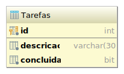

Crie uma aplicação de lista de tarefas que tenha os seguintes recursos:
- Adicionar tarefas a fazer.
- Marcar tarefas como concluídas.
- Visualizar todas as tarefas, mas as concluídas aparecem com visual diferente.
- Excluir tarefas, sejam concluídas ou não.
Banco de dados
Você pode utilizar a tabela Tarefas abaixo para guardar as tarefas:
|  |
{% highlight sql %}{% include_relative un2/create-tarefas.sql %}{% endhighlight %} |
As classes de acesso a dados Tarefa e TarefaDao já estão criadas e prontas para uso.
Tarefa.java
{% highlight java %}{% include_relative un2/Tarefa.java %}{% endhighlight %}
TarefaDao.java
{% highlight java %}{% include_relative un2/TarefaDao.java %}{% endhighlight %}
Penalidades
A aplicação deve ser desenvolvida conforme as seguintes diretrizes, sob pena de redução percentual na nota:
- [-50%] Você deverá implementar usando o framework MVC discutido em sala de aula.
- [-20%] Pelo menos um dos recursos deverá utilizar AJAX.
Bônus
Esforço extra será recompensado. As seguintes características agregarão ao valor da nota.
- [até +10%] Aplicação totalmente desenvolvida usando AJAX.
- [até +10%] Criatividade da interface da aplicação.
- [até +10%] Personalização da camada model, inclusive o esquema da tabela.